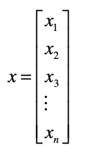
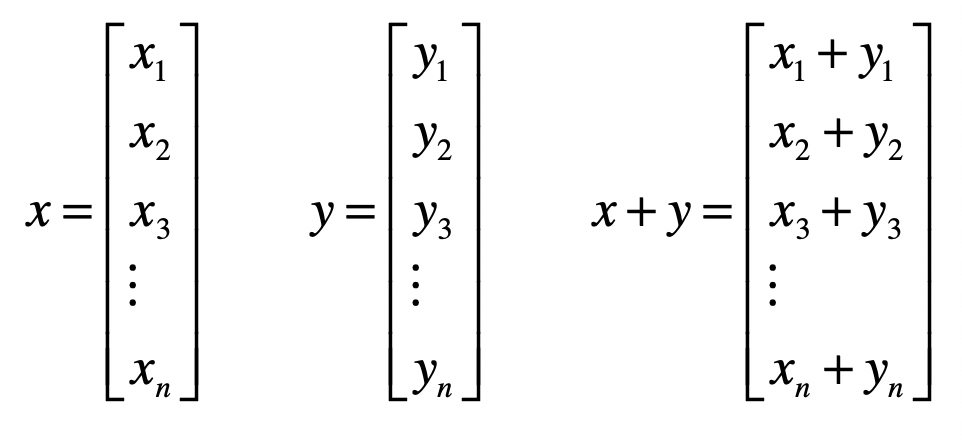
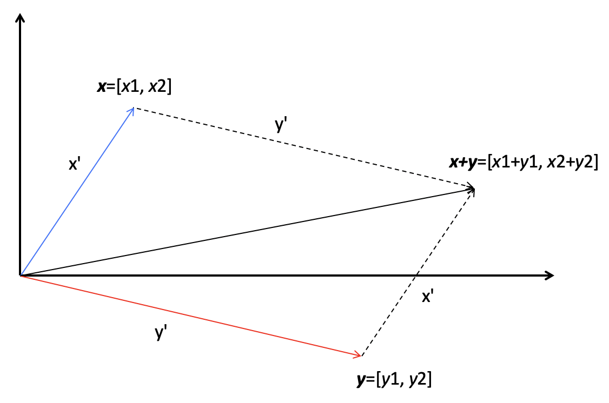
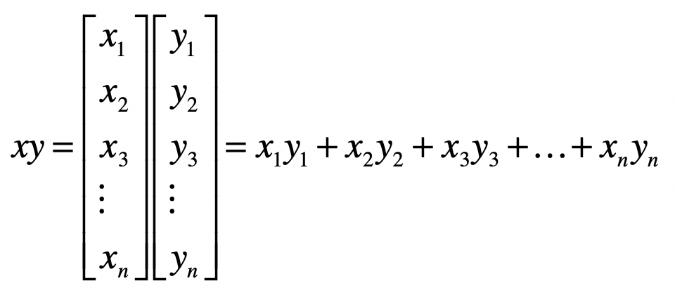
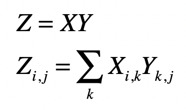
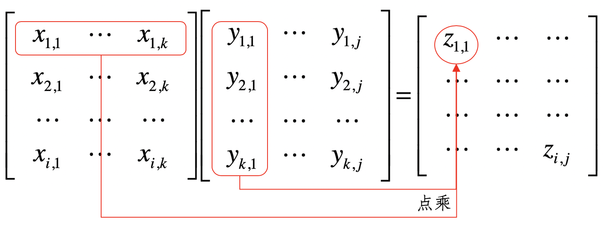
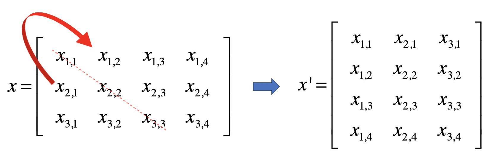
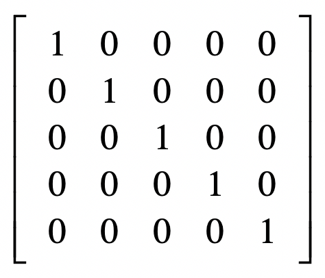
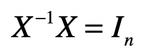

- 01 二进制：不了解计算机的源头，你学什么编程.md
- 02 余数：原来取余操作本身就是个哈希函数.md
- 03 迭代法：不用编程语言的自带函数，你会如何计算平方根？.md
- 04 数学归纳法：如何用数学归纳提升代码的运行效率？.md
- 05 递归（上）：泛化数学归纳，如何将复杂问题简单化？.md
- 06 递归（下）：分而治之，从归并排序到MapReduce.md
- 07 排列：如何让计算机学会“田忌赛马”？.md
- 08 组合：如何让计算机安排世界杯的赛程？.md
- 09 动态规划（上）：如何实现基于编辑距离的查询推荐？.md
- 10 动态规划（下）：如何求得状态转移方程并进行编程实现？.md
- 11 树的深度优先搜索（上）：如何才能高效率地查字典？.md
- 12 树的深度优先搜索（下）：如何才能高效率地查字典？.md
- 13 树的广度优先搜索（上）：人际关系的六度理论是真的吗？.md
- 14 树的广度优先搜索（下）：为什么双向广度优先搜索的效率更高？.md
- 15 从树到图：如何让计算机学会看地图？.md
- 16 时间和空间复杂度（上）：优化性能是否只是“纸上谈兵”？.md
- 17 时间和空间复杂度（下）：如何使用六个法则进行复杂度分析？.md
- 18 总结课：数据结构、编程语句和基础算法体现了哪些数学思想？.md
- 19 概率和统计：编程为什么需要概率和统计？.md
- 20 概率基础（上）：一篇文章帮你理解随机变量、概率分布和期望值.md
- 21 概率基础（下）：联合概率、条件概率和贝叶斯法则，这些概率公式究竟能做什么？.md
- 22 朴素贝叶斯：如何让计算机学会自动分类？.md
- 23 文本分类：如何区分特定类型的新闻？.md
- 24 语言模型：如何使用链式法则和马尔科夫假设简化概率模型？.md
- 25 马尔科夫模型：从PageRank到语音识别，背后是什么模型在支撑？.md
- 26 信息熵：如何通过几个问题，测出你对应的武侠人物？.md
- 27 决策树：信息增益、增益比率和基尼指数的运用.md
- 28 熵、信息增益和卡方：如何寻找关键特征？.md
- 29 归一化和标准化：各种特征如何综合才是最合理的？.md
- 30 统计意义（上）：如何通过显著性检验，判断你的A_B测试结果是不是巧合？.md
- 31 统计意义（下）：如何通过显著性检验，判断你的A_B测试结果是不是巧合？.md
- 32 概率统计篇答疑和总结：为什么会有欠拟合和过拟合？.md
- 33 线性代数：线性代数到底都讲了些什么？.md
- 34 向量空间模型：如何让计算机理解现实事物之间的关系？.md
- 35 文本检索：如何让计算机处理自然语言？.md
- 36 文本聚类：如何过滤冗余的新闻？.md
- 37 矩阵（上）：如何使用矩阵操作进行PageRank计算？.md
- 38 矩阵（下）：如何使用矩阵操作进行协同过滤推荐？.md
- 39 线性回归（上）：如何使用高斯消元求解线性方程组？.md
- 40 线性回归（中）：如何使用最小二乘法进行直线拟合？.md
- 41 线性回归（下）：如何使用最小二乘法进行效果验证？.md
- 42 PCA主成分分析（上）：如何利用协方差矩阵来降维？.md
- 43 PCA主成分分析（下）：为什么要计算协方差矩阵的特征值和特征向量？.md
- 44 奇异值分解：如何挖掘潜在的语义关系？.md
- 45 线性代数篇答疑和总结：矩阵乘法的几何意义是什么？.md
- 46 缓存系统：如何通过哈希表和队列实现高效访问？.md
- 47 搜索引擎（上）：如何通过倒排索引和向量空间模型，打造一个简单的搜索引擎？.md
- 48 搜索引擎（下）：如何通过查询的分类，让电商平台的搜索结果更相关？.md
- 49 推荐系统（上）：如何实现基于相似度的协同过滤？.md
- 50 推荐系统（下）：如何通过SVD分析用户和物品的矩阵？.md
- 51 综合应用篇答疑和总结：如何进行个性化用户画像的设计？.md
- 导读：程序员应该怎么学数学？.md
- 开篇词 作为程序员，为什么你应该学好数学？.md
- 数学专栏课外加餐（一） 我们为什么需要反码和补码？.md
- 数学专栏课外加餐（三）：程序员需要读哪些数学书？.md
- 数学专栏课外加餐（二） 位操作的三个应用实例.md
- 结束语 从数学到编程，本身就是一个很长的链条.md
33 线性代数：线性代数到底都讲了些什么？
你好，我是黄申。
通过第二模块的学习，我想你对概率统计在编程领域，特别是机器学习算法中的应用，已经有了一定理解。概率统计关注的是随机变量及其概率分布，以及如何通过观测数据来推断这些分布。可是，在解决很多问题的时候，我们不仅要关心单个变量之间的关系，还要进一步研究多个变量之间的关系，最典型的例子就是基于多个特征的信息检索和机器学习。
在信息检索中，我们需要考虑多个关键词特征对最终相关性的影响，而在机器学习中，无论是监督式还是非监督式学习，我们都需要考虑多个特征对模型拟合的影响。在研究多个变量之间关系的时候，线性代数成为了解决这类问题的有力工具。
另一方面，在我们日常生活和工作中，很多问题都可以线性化，小到计算两个地点之间的距离，大到计算互联网中全部网页的PageRank。所以，为了使用编程来解决相应的问题，我们也必须掌握一些必要的线性代数基础知识。因此，我会从线性代数的基本概念出发，结合信息检索和机器学习领域的知识，详细讲解线性代数的运用。
关于线性代数，究竟都需要掌握哪些方面的知识呢？我们今天就来看一看，让你对之后一段时间所要学习的知识有个大体的了解。
向量和向量空间
我们之前所谈到的变量都属于标量（Scalar）。它只是一个单独的数字，而且不能表示方向。从计算机数据结构的角度来看，标量就是编程中最基本的变量。这个很好理解，你可以回想一下刚开始学习编程时接触到的标量类型的变量。
和标量对应的概念，就是线性代数中最常用、也最重要的概念，向量（Vector），也可以叫做矢量。它代表一组数字，并且这些数字是有序排列的。我们用数据结构的视角来看，向量可以用数组或者链表来表达。
后面的文章里，我会用加粗的小写字母表示一个向量，例如\(x\)，而\(x\_{1}，x\_{2}，x\_{3}，…，x\_{n}\)等等，来表示向量中的每个元素，这里面的n就是向量的维。

向量和标量最大的区别在于，向量除了拥有数值的大小，还拥有方向。向量或者矢量中的“向”和“矢”这两个字，都表明它们是有方向的。你可能会问，为什么这一串数字能表示方向呢？
这是因为，如果我们把某个向量中的元素看作坐标轴上的坐标，那么这个向量就可以看作空间中的一个点。以原点为起点，以向量代表的点为终点，就能形成一条有向直线。而这样的处理其实已经给向量赋予了代数的含义，使得计算的过程中更加直观。在后面讨论向量空间、向量夹角、矩阵特征值等概念的时候，我会进一步展示给你看。
由于一个向量包含了很多个元素，因此我们自然地就可以把它运用在机器学习的领域。上一个模块，我讲过如何把自然界里物体的属性，转换为能够用数字表达的特征。由于特征有很多维，因此我们可以使用向量来表示某个物体的特征。其中，向量的每个元素就代表一维特征，而元素的值代表了相应特征的值，我们称这类向量为特征向量（Feature Vector）。
需要注意的是，这个特征向量和矩阵的特征向量（Eigenvector）是两码事。那么矩阵的特征向量是什么意思呢？矩阵的几何意义是坐标的变换。如果一个矩阵存在特征向量和特征值，那么这个矩阵的特征向量就表示了它在空间中最主要的运动方向。如果你对这几个概念还不太理解，也不用担心，在介绍矩阵的时候，我会详细说说什么是矩阵的特征向量。
向量的运算
标量和向量之间可以进行运算，比如标量和向量相加或者相乘时，我们直接把标量和向量中的每个元素相加或者相乘就行了，这个很好理解。可是，向量和向量之间的加法或乘法应该如何进行呢？我们需要先定义向量空间。向量空间理论上的定义比较繁琐，不过二维或者三维的坐标空间可以很好地帮助你来理解。这些空间主要有几个特性：
空间由无穷多个的位置点组成；
这些点之间存在相对的关系；
可以在空间中定义任意两点之间的长度，以及任意两个向量之间的角度；
这个空间的点可以进行移动。
有了这些特点，我们就可以定义向量之间的加法、乘法（或点乘）、距离和夹角等等。
两个向量之间的加法，首先它们需要维度相同，然后是对应的元素相加。

所以说，向量的加法实际上就是把几何问题转化成了代数问题，然后用代数的方法实现了几何的运算。我下面画了一张图，来解释二维空间里，两个向量的相加，看完你就能理解了。

在这张图中，有两个向量x和y，它们的长度分别是x’和y’，它们的相加结果是x+y，这个结果所对应的点相当于x向量沿着y向量的方向移动y’，或者是y向量沿着x向量的方向移动x’。
向量之间的乘法默认是点乘，向量x和y的点乘是这么定义的：

点乘的作用是把相乘的两个向量转换成了标量，它有具体的几何含义。我们会用点乘来计算向量的长度以及两个向量间的夹角，所以一般情况下我们会默认向量间的乘法是点乘。至于向量之间的夹角和距离，它们在向量空间模型（Vector Space Model）中发挥了重要的作用。信息检索和机器学习等领域充分利用了向量空间模型，计算不同对象之间的相似程度。在之后的专栏里，我会通过向量空间模型，详细介绍向量点乘，以及向量间夹角和距离的计算。
矩阵的运算
矩阵由多个长度相等的向量组成，其中的每列或者每行就是一个向量。因此，我们把向量延伸一下就能得到矩阵（Matrix）。
从数据结构的角度看，向量是一维数组，那矩阵就是一个二维数组。如果二维数组里绝大多数元素都是0或者不存在的值，那么我们就称这个矩阵很稀疏（Sparse）。对于稀疏矩阵，我们可以使用哈希表的链地址法来表示。所以，矩阵中的每个元素有两个索引。
我用加粗的斜体大写字母表示一个矩阵，例如\(X\)，而\(X\_{12}，X\_{22}，…，X\_{nm}\)等等，表示矩阵中的每个元素，而这里面的n和m分别表示矩阵的行维数和列维数。
我们换个角度来看，向量其实也是一种特殊的矩阵。如果一个矩阵是n × m维，那么一个n × 1的矩阵也可以称作一个n维列向量；而一个1 × m矩阵也称为一个m维行向量。
同样，我们也可以定义标量和矩阵之间的加法和乘法，我们只需要把标量和矩阵中的每个元素相加或相乘就可以了。剩下的问题就是，矩阵和矩阵之间是如何进行加法和乘法的呢？矩阵加法比较简单，只要保证参与操作的两个矩阵具有相同的行维度和列维度，我们就可以把对应的元素两两相加。而乘法略微繁琐一些，如果写成公式就是这种形式：

其中，矩阵\(Z\)为矩阵\(X\)和\(Y\)的乘积，\(X\)是形状为i x k的矩阵，而\(Y\)是形状为k × j的矩阵。\(X\)的列数k必须和\(Y\)的行数k相等，两者才可以进行这样的乘法。
我们可以把这个过程看作矩阵\(X\)的行向量和矩阵\(Y\)的列向量两两进行点乘，我这里画了张图，你理解了这张图就不难记住这个公式了。

两个矩阵中对应元素进行相乘，这种操作也是存在的，我们称它为元素对应乘积，或者Hadamard乘积。但是这种乘法咱们用得比较少，所以你只要知道有这个概念就可以了。
除了加法和乘法，矩阵还有一些其他重要的操作，包括转置、求逆矩阵、求特征值和求奇异值等等。
转置（Transposition）是指矩阵内的元素行索引和纵索引互换，例如\(X\_{ij}\)就变为\(X\_{ji}\)，相应的，矩阵的形状由转置前的n × m变为转置后的m × n。从几何的角度来说，矩阵的转置就是原矩阵以对角线为轴进行翻转后的结果。下面这张图展示了矩阵\(X\)转置之后的矩阵\(X’\)：

除了转置矩阵，另一个重要的概念是逆矩阵。为了理解逆矩阵或矩阵逆（Matrix Inversion），我们首先要理解单位矩阵（Identity Matrix）。单位矩阵中，所有沿主对角线的元素都是1，而其他位置的所有元素都是0。通常我们只考虑单位矩阵为方阵的情况，也就是行数和列数相等，我们把它记作\(I\_{n}\)，\(n\)表示维数。我这里给出一个\(I\_{5}\)的示例。

如果有矩阵\(X\)，我们把它的逆矩阵记做\(X^{-1}\)，两者相乘的结果是单位矩阵，写成公式就是这种形式：

特征值和奇异值的概念以及求解比较复杂，从大体上来理解，它们可以帮助我们找到矩阵最主要的特点。通过这些操作，我们就可以在机器学习算法中降低特征向量的维度，达到特征选择和变换的目的。我会在后面的专栏，结合案例给你详细讲解。
总结
相对于概率统计，线性代数中的基本概念和知识点可能没有那么多。但是对于刚入门的初学者，这些内容理解起来会比较费力。在这一节里，我进行了大致的梳理，帮助你学习。
标量和向量的区别，标量只是单独的一个数，而向量是一组数。矩阵是向量的扩展，就是一个二维数组。我们可以使用哈希表的链地址法表示稀疏矩阵。
标量和向量或矩阵的加法、乘法比较简单，就是把这个标量和向量或矩阵中所有的元素轮流进行相加或相乘。向量之间的加法和矩阵之间的加法，是把两者对应的元素相加。向量之间的相乘分为叉乘和点乘，我在专栏里默认向量乘法为点乘。而矩阵的乘法默认为左矩阵的行向量和右矩阵的列向量两两点乘。
说到这里，你可能还是不太理解线性代数对于编程有什么用处。在这个模块之后的内容中，我会详细介绍向量空间模型、线性方程组、矩阵求特征值和奇异值分解等，在信息检索和机器学习领域中，有怎样的应用场景。
思考题
之前你对线性代数的认识是什么样的呢？对这块内容，你觉得最难的是什么？
欢迎留言和我分享，也欢迎你在留言区写下今天的学习笔记。你可以点击“请朋友读”，把今天的内容分享给你的好友，和他一起精进。
© 2019 - 2023 Liangliang Lee. Powered by gin and hexo-theme-book.